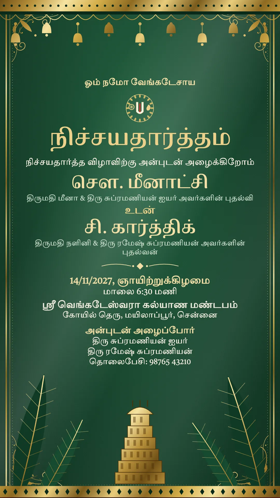

Designs › Ring Ceremony › Nischayathartham Banana Leaf
Nischayathartham Banana Leaf: Tamil engagement invitation

- Ceremony: Ring Ceremony
- Language: Tamil
- God or sacred symbol: Tirupati Balaji
- Format: WhatsApp image (1080 x 1920 px) and 5 x 7 inch print PDF
- Pages: 1 (the invitation card)
About this design
Deep bottle green, lighter in the middle, with a gold bar along the top and bottom edges and a thin gold line framing the card. Seven small gold bells hang from the top, with a gold leaf sprig curling into each upper corner. At the bottom, two tall banana leaves rise from the corners, drawn in dark green with gold veins, and between them stands a tiered gold temple gopuram. The bottom bar carries a row of small gold diamonds.
The cover opens with ஓம் நமோ வேங்கடேசாய in small cream type and the namam emblem of Venkateswara in a gold ring. நிச்சயதார்த்தம் is set large in gold, followed by a one-line invitation. The names are in gold, with சௌ. before the bride's name and சி. before the groom's, and the parents' names are in small cream type under each. The date, an evening time of 6:30, a kalyana mandapam in Mylapore, Chennai and the அன்புடன் அழைப்போர் block with both fathers' names close the card.
It suits Iyer and other Tamil Hindu families who send a separate card for the engagement, when the two families formally agree to the match. The green and gold look is a clear break from the cream of a wedding card, so guests will not mix the two up. It belongs with Kanchipuram Temple Silk for the wedding and Mangala Snanam Turmeric Bath for the bath before it: all three use the same Venkateswara invocation and the same sample families. Compared with Mangala Snanam, which is turmeric orange with a brass kalash, Nischayathartham is darker and more formal, which fits an evening function.
Sample wording on this card
The card opens in the editor with this text. Change any line, or switch the card to another language.
ஓம் நமோ வேங்கடேசாய
நிச்சயதார்த்தம்
நிச்சயதார்த்த விழாவிற்கு அன்புடன் அழைக்கிறோம்
சௌ. மீனாட்சி
திருமதி மீனா & திரு சுப்ரமணியன் ஐயர் அவர்களின் புதல்வி
உடன்
சி. கார்த்திக்
திருமதி நளினி & திரு ரமேஷ் சுப்ரமணியன் அவர்களின் புதல்வன்
15/11/2026, ஞாயிற்றுக்கிழமை
மாலை 6:30 மணி
ஸ்ரீ வெங்கடேஸ்வரா கல்யாண மண்டபம்
கோயில் தெரு, மயிலாப்பூர், சென்னை
அன்புடன் அழைப்போர்
திரு சுப்ரமணியன் ஐயர்
திரு ரமேஷ் சுப்ரமணியன்
தொலைபேசி: 98765 43210